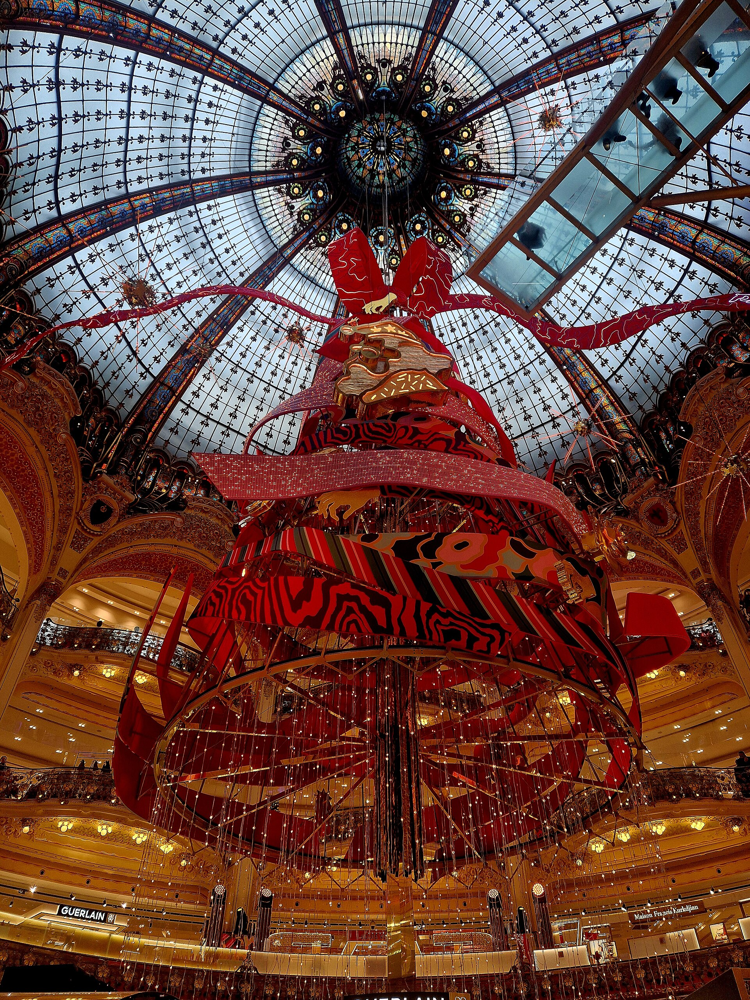

Subjonctif & conditionnel : l'usage parfait
Subjunctive and conditional: flawless useCarys, tu connais déjà le subjonctif et le conditionnel. Aujourd'hui, on passe au niveau supérieur : les cas où le mode change le sens de la phrase, le subjonctif passé, les tournures concessives, le conditionnel de la presse et du reproche, et les pièges que même les francophones ratent. Le décor : ta campagne de Noël. Carys, you already know the subjunctive and the conditional. Today we go further: cases where the mood changes the meaning, the past subjunctive, concessive structures, the conditional of the press and of reproach, and the traps even native speakers miss. The setting: your Christmas campaign.
Trois phrases pour commencer
Three sentences to warm upCarys, choisis la bonne forme. Carys, choose the right form.
C'est la plus belle vitrine que nous ___ jamais conçue.
It's the most beautiful window we've ever designed.Au cas où le client ___ en retard, commencez sans lui.
In case the client is late, start without him.Il me semble que le slogan ___ trop long.
It seems to me the slogan is too long.
Même phrase, autre mode, autre sens
Same sentence, different mood, different meaningIndicatif : je constate
indicative: I state a factLa réalité existe, tu la décris ou tu la comprends.
Reality exists; you describe it or grasp it.Je cherche la graphiste qui parle anglais. (elle existe, je la connais)
Subjonctif : j'envisage
subjunctive: I'm considering an ideaTu ne décris pas un fait : tu poses une exigence, une idée, une réaction.
You're not describing a fact: you're setting a requirement, an idea, a reaction.Je cherche une graphiste qui sache animer en 3D. (existe-t-elle ?)
Exemples
Je comprends que le client est pressé. (je saisis l'information)
I understand that the client is in a hurry. (I get the information)Je comprends que le client soit pressé. (je trouve ça normal)
I can see why the client would be in a hurry. (I find it understandable)Dis-lui que la réunion est à 10 h. (information)
Tell her the meeting is at 10. (information)Dis-lui qu'elle vienne à 10 h. (ordre)
Tell her to come at 10. (order)Admettons que tu as raison sur ce point. (je te le concède)
Let's say you're right on this point. (I concede it)Admettons que le budget soit doublé : que ferais-tu ? (hypothèse)
Suppose the budget were doubled: what would you do? (hypothesis)Il a parlé fort, de sorte que tout le monde l'a entendu. (conséquence)
He spoke loudly, so everyone heard him. (result)Parle fort, de sorte que tout le monde t'entende. (but)
Speak loudly so that everyone can hear you. (purpose)Choisis selon le sens
Choose according to the meaningCarys, lis l'indication de sens entre parenthèses et choisis la forme qui la traduit. Carys, read the meaning in brackets and choose the form that expresses it.
Nous cherchons un lieu de tournage qui ___ libre le 20 décembre. (on ne sait pas s'il existe)
J'ai trouvé un studio qui ___ libre le 20 décembre. (il existe)
Je comprends que tu ___ déçue : ton idée était la meilleure. (je trouve ça normal)
En lisant son mail, j'ai compris qu'il ___ quitter l'agence. (j'ai saisi l'information)
Dites au photographe qu'il ___ son matériel dès 7 h. (ordre)
Organise le planning de sorte que personne ne ___ le week-end. (but)
Le planning était bien fait, de sorte que personne n'___ le week-end. (conséquence)
Supposons que la marque ___ le concept : on commence lundi. (hypothèse)
Le profil idéal
The ideal profileTu recrutes un ou une freelance pour la campagne. Décris à ta collègue la personne que tu cherches (elle n'existe peut-être pas !), puis la personne que tu as déjà trouvée pour un autre poste. Termine par une phrase avec « je comprends que » + subjonctif. You're hiring a freelancer for the campaign. Describe to your colleague the person you're looking for (who may not exist!), then the person you've already found for another role. End with « je comprends que » + subjunctive.
Je cherche quelqu'un qui sache animer des illustrations et qui ait l'habitude des grandes marques. Pour le montage, en revanche, j'ai trouvé une personne qui connaît très bien notre style. Je comprends que ce soit difficile de trouver le profil parfait en novembre, mais je ne veux pas transiger.
I'm looking for someone who can animate illustrations and who's used to big brands. For the editing, on the other hand, I've found someone who knows our style very well. I understand it's hard to find the perfect profile in November, but I don't want to compromise.Le temps dans le mode : les formes passées
Time within the mood: the past formsSubjonctif passé
que + avoir / être au subjonctif + participe passé
for an action completed before the other one, or before a future pointConditionnel passé
avoir / être au conditionnel + participe passé
for what didn't happen: regret, reproach, unconfirmed past factNe pas confondre
Le subjonctif passé ne parle pas forcément du passé : « Il faut que la maquette soit terminée avant vendredi » regarde vers le futur, mais l'action sera accomplie avant un repère. Pense « accompli », pas « passé ». The past subjunctive doesn't necessarily refer to the past: it can look to the future, with the action completed before a reference point. Think « completed », not « past ».
Présent ou passé ?
Present or past?Carys, conjugue le verbe au subjonctif présent ou passé, ou au conditionnel passé, selon le sens. Attention aux accords. Carys, conjugate the verb in the present or past subjunctive, or the past conditional, depending on the meaning. Watch the agreements.
Je suis ravie que le client (valider) le storyboard hier.
I'm delighted the client approved the storyboard yesterday.Bien que les deux actrices (arriver) en retard, le tournage a commencé à l'heure.
Although the two actresses arrived late, filming started on time.Il faut que tout (être) imprimé avant le 1er décembre.
Everything must be printed before 1 December.Je ne crois pas qu'ils (lire) le brief avant la réunion.
I don't think they read the brief before the meeting.Tu (pouvoir) me prévenir que le client venait !
You could have warned me the client was coming!Selon la presse, la marque (dépenser) trois millions pour sa campagne.
According to the press, the brand reportedly spent three million on its campaign.C'est la meilleure idée qu'on (avoir) cette année.
It's the best idea we've had this year.Il (falloir) que nous réservions le studio plus tôt.
We should have booked the studio earlier.
Bascule vers le passé
Switch to the pastCarys, mets la forme au passé à voix haute, puis retourne la carte pour vérifier. Carys, say the past form out loud, then flip the card to check.
Le subjonctif là où on ne l'attend pas
The subjunctive where you don't expect itCes expressions déclenchent le subjonctif. These expressions trigger the subjunctive.
C'est la seule agence qui puisse le faire.
Que la marque hésite, ça se comprend.
Quoi que dise le client, on garde l'idée.
Si original que soit le concept, il faut le tester.
Pour peu que la météo suive, on tourne dehors.
Ce n'est pas que l'idée soit mauvaise, mais…
Exemples
C'est le premier client qui ait accepté sans rien changer.
He's the first client who has accepted without changing anything.Le fait que la campagne soit diffusée en Angleterre change tout.
The fact that the campaign is broadcast in England changes everything.Où que tu ailles à Paris, tu verras nos affiches.
Wherever you go in Paris, you'll see our posters.Aussi séduisant que soit ce slogan, il est trop long.
However appealing this slogan is, it's too long.Nous tiendrons les délais, à moins que l'imprimeur ne prenne du retard.
We'll meet the deadline, unless the printer falls behind.Le « ne » explétif : après à moins que, avant que, de crainte que, de peur que, et après craindre ou avoir peur que, le registre soutenu ajoute un « ne » qui n'est pas négatif. « À moins que le client ne refuse » = unless the client refuses. Pour la vraie négation, il faut « ne… pas ». The expletive « ne »: in formal register, after these expressions, a « ne » with no negative meaning is added. For a real negation, you need « ne… pas ».
Complète au bon mode
Complete in the right moodCarys, conjugue le verbe entre parenthèses. Le temps est celui du sens de la phrase. Carys, conjugate the verb in brackets. Choose the tense that fits the meaning.
C'est le seul photographe qui (savoir) travailler sous la neige.
He's the only photographer who knows how to work in the snow.Quoi que tu (faire), fais-le avec élégance.
Whatever you do, do it with style.Si brillante que (être) l'idée, le client veut un plan B.
However brilliant the idea is, the client wants a plan B.Pour peu qu'il (neiger), la vidéo sera magique.
As long as it snows, the video will be magical.Le fait que la directrice (venir) en personne montre l'enjeu.
The fact that the director is coming in person shows what's at stake.On lance l'impression, à moins que tu n' (avoir) une objection.
We'll start printing, unless you have an objection.C'est la campagne la plus audacieuse que l'agence (produire) depuis dix ans.
It's the boldest campaign the agency has produced in ten years.Ce n'est pas que je (vouloir) te contredire, mais le rouge est trop vif.
It's not that I want to contradict you, but the red is too bright.
Le client sceptique
The sceptical clientLe client doute de ton concept. Défends-le en quatre phrases avec : un superlatif + subjonctif, « si… que », « quoi que » et « à moins que ». The client has doubts about your concept. Defend it in four sentences using: a superlative + subjunctive, « si… que », « quoi que » and « à moins que ».
C'est le concept le plus émouvant que nous ayons proposé cette année. Si risqué qu'il paraisse, il correspond exactement à votre public. Quoi qu'en disent les études, les gens veulent une histoire à Noël. À moins que vous ne préfériez une campagne que tout le monde oubliera en janvier.
It's the most moving concept we've pitched this year. However risky it may seem, it fits your audience exactly. Whatever the studies say, people want a story at Christmas. Unless you'd prefer a campaign everyone will have forgotten by January.Le conditionnel des professionnels
The professional's conditionalD'après Stratégies, l'agence aurait perdu le budget Galeries.
According to Stratégies, the agency has reportedly lost the Galeries account.Vous auriez pu nous envoyer les fichiers plus tôt.
You could have sent us the files earlier.Au cas où la neige ne tomberait pas, on a prévu de la neige artificielle.
In case the snow doesn't fall, we've planned artificial snow.Quand bien même le client refuserait, nous garderions cette idée.
Even if the client refused, we'd keep this idea.Le tournage serait annulé, nous aurions un plan B.
Were the shoot cancelled, we'd have a plan B.Je dirais que le visuel manque de chaleur.
I'd say the visual lacks warmth.Hypothèses mixtes et inversion
Les hypothèses mixtes croisent les époques : si + plus-que-parfait → conditionnel présent (passé qui pèse sur le présent) ; si + imparfait → conditionnel passé (caractère permanent, conséquence passée). Et en question, le conditionnel avec inversion exprime une supposition. Mixed hypotheses cross time frames: si + pluperfect → present conditional; si + imperfect → past conditional. In a question with inversion, the conditional expresses a supposition.
Si nous avions réservé le studio en octobre, nous ne serions pas stressés aujourd'hui.
If we'd booked the studio in October, we wouldn't be stressed today.Si tu étais plus organisée, tu aurais vu l'erreur.
If you were more organised, you'd have spotted the mistake.Le client aurait-il oublié la réunion ?
Could the client have forgotten the meeting?Le conditionnel en situation
The conditional in contextCarys, choisis la forme correcte. Carys, choose the correct form.
Au cas où l'imprimeur ___ du retard, prévenez-moi.
Si tu nous avais envoyé le fichier hier, nous ___ déjà fini.
Si nous avions signé en septembre, nous ___ plus sereins maintenant.
Quand bien même le budget ___ doublé, le délai serait trop court.
Selon plusieurs sources, la marque ___ son agence la semaine dernière.
Tu ___ me dire que la réunion était annulée !
Si elle n'était pas si perfectionniste, elle ___ le projet en octobre.
Le client ___-il changé d'avis ? Il ne répond plus.
Le débrief qui pique
The awkward debriefLe tournage s'est mal passé : retards, fichiers perdus, rumeurs dans la presse. Fais le débrief avec ton équipe : une rumeur au conditionnel passé, un reproche diplomatique, une hypothèse mixte et une mesure « au cas où ». The shoot went badly: delays, lost files, rumours in the press. Debrief your team: a rumour in the past conditional, a diplomatic reproach, a mixed hypothesis and a precaution with « au cas où ».
D'après un journal, nous aurions dépassé le budget de trente pour cent, ce qui est faux. En revanche, on aurait pu sauvegarder les fichiers sur deux disques. Si nous avions fait cette vérification, nous ne serions pas en train de refaire la moitié des images. Au cas où cela se reproduirait, chacun enverra une copie le soir même.
According to a newspaper, we reportedly went thirty percent over budget, which is false. On the other hand, we could have backed up the files on two drives. If we'd done that check, we wouldn't be redoing half the footage. In case it happens again, everyone will send a copy the same evening.Les pièges de haut niveau
High-level trapsIl semble que / il me semble que
it seems / it seems to meIl semble que le client soit satisfait. · Il me semble que le client est satisfait.
It seems the client is satisfied. · It seems to me the client is satisfied.Il semble que : doute → subjonctif. Il me semble que : opinion → indicatif.
Probable ou possible ?
probable or possible?Il est probable que la campagne sortira le 1er. · Il est possible qu'elle sorte le 1er.
It's likely the campaign will come out on the 1st. · It's possible it'll come out on the 1st.Probable : quasi-certitude → indicatif. Possible, il se peut que : subjonctif.
Croire, penser en question
believe, think in a questionCrois-tu qu'il viendra ? · Crois-tu qu'il vienne ?
Do you think he'll come? (neutral · doubtful)Avec l'inversion, les deux sont possibles : le subjonctif montre que tu en doutes.
Après que + indicatif
après que + indicativeAprès que le client a validé, nous avons lancé l'impression.
After the client approved, we started printing.C'est un fait accompli : indicatif dans la langue soignée, même si on entend souvent le subjonctif.
Le premier… qui, selon l'intention
the first… who, depending on intentC'est le premier client qui est venu. · C'est le premier client qui m'ait vraiment écoutée.
He's the first client who came. · He's the first client who's ever really listened to me.Ordre chronologique : indicatif. Jugement, caractère exceptionnel : subjonctif.
Nuance
Pour reconnaître seulement, pas pour produire : dans les romans et la presse soutenue, tu croiseras l'imparfait du subjonctif (« il fallait qu'il vînt ») et le conditionnel passé 2e forme (« il eût été préférable » = il aurait été préférable). To recognise, not to use: in novels and formal press you'll meet the imperfect subjunctive and the « second form » past conditional (« il eût été préférable » = it would have been better).
Le bon mode, sans filet
The right mood, no safety netCarys, choisis la forme correcte. L'indicatif est parfois la bonne réponse. Carys, choose the correct form. The indicative is sometimes the right answer.
Il semble que la vidéo ___ trop longue pour Instagram.
Il me semble que la vidéo ___ trop longue pour Instagram.
Il est probable que le client ___ la version courte.
Il se peut que le client ___ la version courte.
Après que nous ___ le devis, le client a rappelé.
Avant que nous ___ le devis, le client a rappelé.
J'espère que vous ___ l'exposition Matisse avant qu'elle ferme.
Je ne dis pas que l'idée ___ mauvaise, je dis qu'elle est trop chère.
Reformule comme une pro
Rephrase like a proCarys, réécris la phrase avec l'élément donné. Garde le sens. Carys, rewrite the sentence using the element given. Keep the meaning.
Même si le concept est original, il coûte trop cher. → Bien que…
Le client a peut-être oublié la réunion. → Il se peut que…
Selon la rumeur, la marque a changé d'agence. (sans « selon ») → La marque…
Tu ne m'as pas prévenue hier, alors je suis en retard aujourd'hui. → Si tu…
Personne d'autre ne connaît aussi bien ce dossier. → C'est la seule personne qui…
Le débat de l'agence
The agency debateTon équipe hésite : lancer la campagne sur TikTok ou rester sur l'affichage dans le métro ? Donne ton avis en nuançant : « il me semble que », « il se peut que », « je ne dis pas que », « il est probable que ». Your team can't decide: launch the campaign on TikTok or stick with posters in the metro? Give a nuanced opinion using the four expressions.
Il me semble que notre cible passe plus de temps sur son téléphone que dans le métro. Je ne dis pas que l'affichage soit dépassé, il reste très élégant à Noël. Mais il se peut que le public le remarque moins qu'avant. Il est probable qu'une vidéo courte touchera plus de monde, alors je proposerais de combiner les deux.
It seems to me our target spends more time on their phones than in the metro. I'm not saying posters are outdated; they're still very elegant at Christmas. But the public may notice them less than before. A short video will probably reach more people, so I'd suggest combining the two.Le pitch de Noël
The Christmas pitchCarys, c'est le grand jour : tu présentes ta campagne au comité de direction de la marque. Deux minutes, quatre étapes, et chaque étape a une contrainte de haut niveau. Carys, it's the big day: you're presenting your campaign to the brand's board. Two minutes, four steps, each with a high-level constraint.
Vous êtes la première marque qui ose… · Quoi que vous ayez vu jusqu'ici…
Nous cherchons une émotion qui soit… · Pour peu que…
Au cas où le public serait… · Quand bien même… · Si audacieux que…
Il aurait été dommage que… · Nous serions ravis que vous…
Mots utiles
Ton défi
Quoi que vous ayez vu cette année, oubliez-le un instant. Nous cherchons une émotion qui soit à la fois intime et partagée : une lettre au Père Noël écrite par des adultes. Pour peu que le public se reconnaisse, la campagne se diffusera d'elle-même. Au cas où le ton paraîtrait trop nostalgique, nous avons prévu une version plus légère pour les réseaux. Si audacieux que soit ce pari, il est fidèle à votre histoire. Il aurait été dommage que votre marque passe à côté, et nous serions ravis que vous nous fassiez confiance.
Whatever you've seen this year, forget it for a moment. We're looking for an emotion that is both intimate and shared: a letter to Father Christmas written by adults. Provided the public recognises itself, the campaign will spread on its own. In case the tone seems too nostalgic, we've planned a lighter version for social media. However bold this bet is, it's true to your history. It would have been a shame for your brand to miss it, and we'd be delighted if you trusted us.À revoir
To reviewRéponds aux exercices : les points à revoir apparaîtront ici, avec un lien vers la règle.